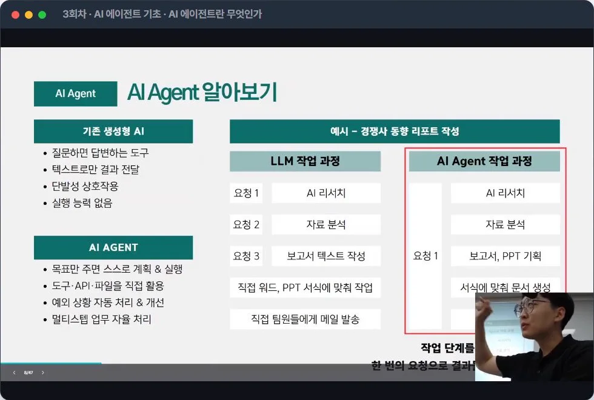
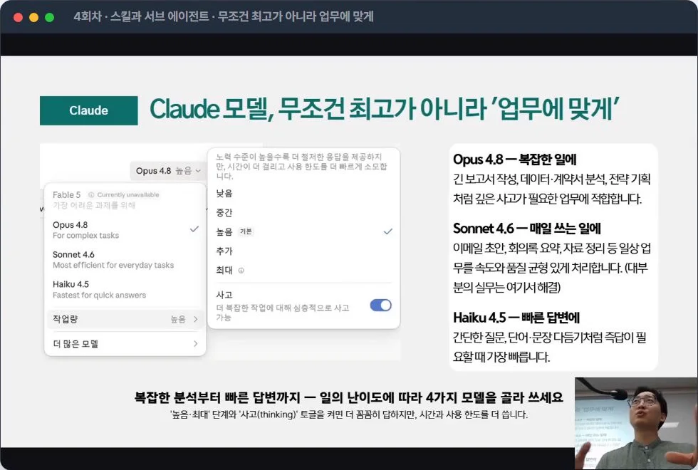
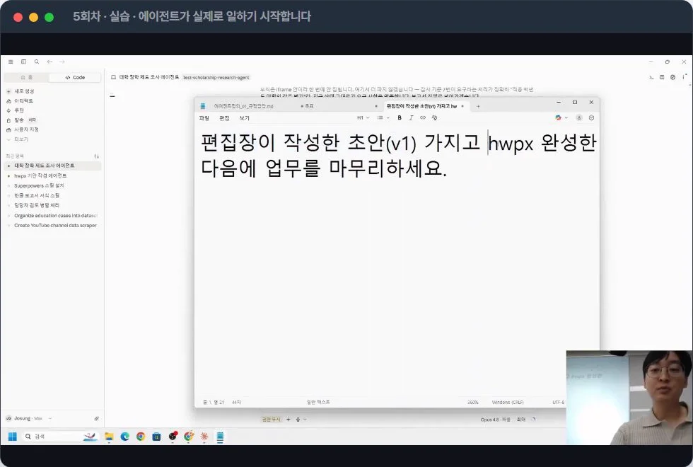
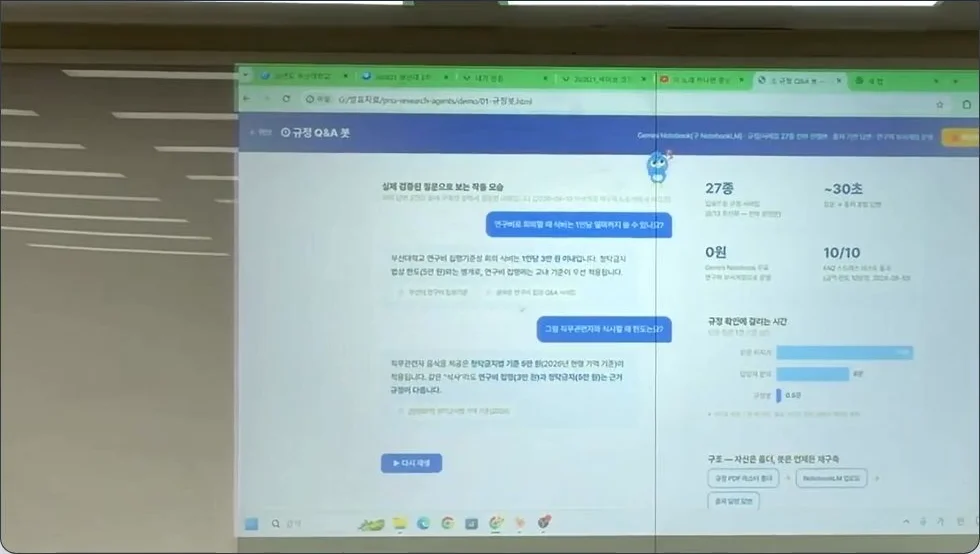
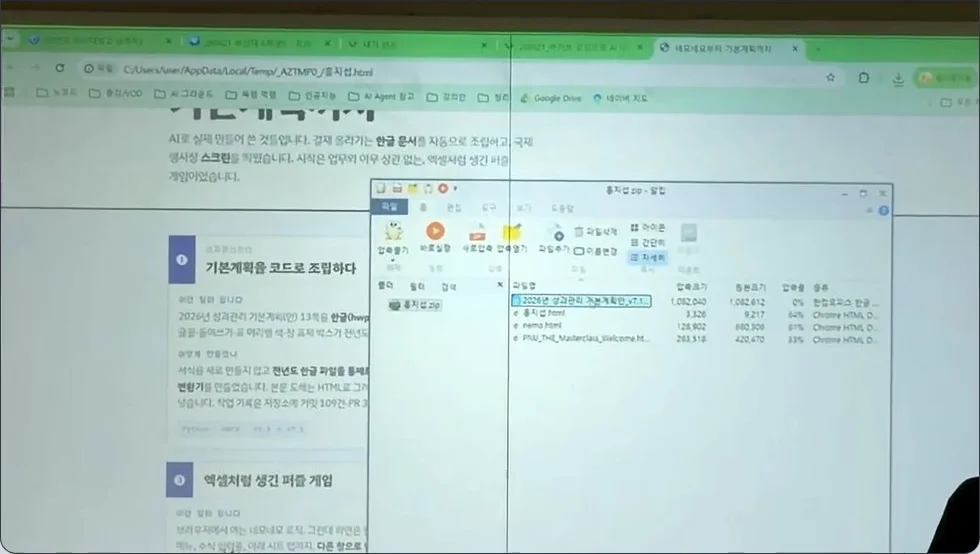
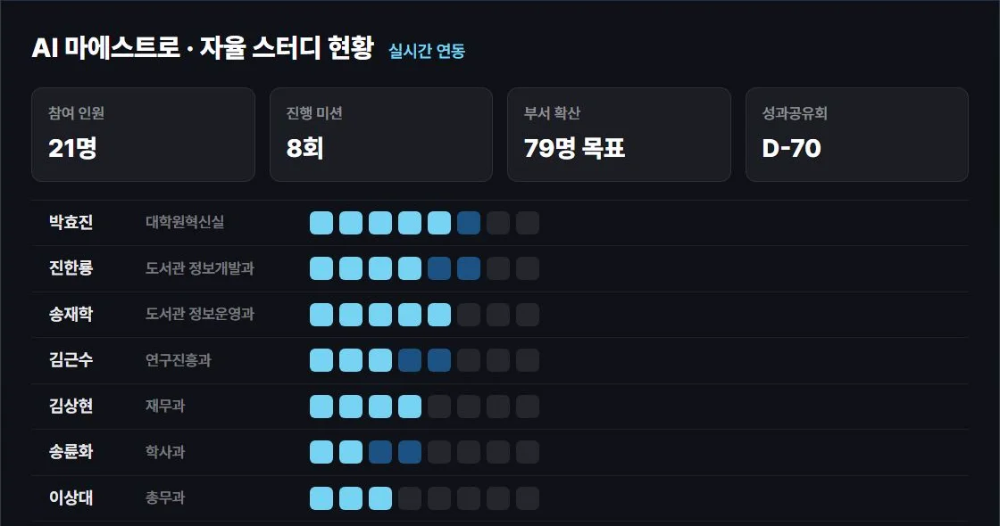

문서 자동화
회의록 발송 에이전트
녹취록을 회의록(.docx)으로 만들어 팀원에게 자동 발송
송재학 · 진한룡 · 김상현 외 · 여러 부서 공통 제작10. 30.(금) 성과공유회 · 대학본부 본관 3층 대강당
부산대학교 AX·정보화혁신본부 AX혁신과
01 여덟 주의 기록
2026. 6. 19. ~ 8. 21. · 정보화교육관 208호
부서마다 한 명씩, 현장을 가장 잘 아는 사람들.
회차를 누르면 배운 내용이 펼쳐집니다.
프롬프트·컨텍스트 엔지니어링, LLM 문서 자동화, 심층 리서치, 나만의 Skill 만들기
데이터 크롤링, 엑셀·HTML 대시보드 생성, VBA·GAS 자동화 사례
AI Agent 개념과 서비스 체험, Claude Code 환경 세팅, PC 제어 기초
문서 생성 에이전트, Skill로 토큰 절약, 서브 에이전트 병렬 처리
크롤링 Skill 제작, 내부 문서 학습 에이전트, 공시자료 분석 실습
연구방법론 적용 정책 분석, Google Apps Script 연동, Claude Design 실습
본인 업무용 Agent 주제 선정, 사용자 여정·입출력 설계, 핵심 기능 구현
프로토타입 고도화·예외 처리, 실 업무 데이터 테스트, 전체 시연과 피드백
공통기반 1~2회차 심화활용 3~8회차
3회차 · AI 에이전트란 무엇인가

4회차 · 난이도에 따라 모델 골라 쓰기

5회차 · 에이전트가 초안을 쓰고, 사람은 마무리만

녹화본이 학내에 공유되어 있어 결석해도 다시 들을 수 있습니다.
02 여러분이 만든 것
교육이 끝나기도 전에 결과물이 실무에서 돌아가고 있었습니다.
문서 자동화
녹취록을 회의록(.docx)으로 만들어 팀원에게 자동 발송
송재학 · 진한룡 · 김상현 외 · 여러 부서 공통 제작리서치
조사원 5명이 동시에 조사하고, 편집장이 목차를 확정
송륜화 · 이상대 · 김근수 외 · 학사과 · 총무과 · 연구진흥과행사 운영
접수 웹사이트를 직접 제작·운영, 1차 검토까지 처리
김근수 · 김상현 · 이상대 · 연구진흥과 · 재무과 · 총무과학내 안내
구글 시트를 실시간으로 읽어 내용이 자동 갱신
진한룡 · 송재학 · 석재영 · 도서관 · AX혁신과평가 · 보고
주간 회의자료(hwpx)에서 추진실적을 뽑아 기술서를 채움
진한룡 · 도서관 정보개발과동향 수집
거점국립대 채용공고를 자동 수집해 엑셀로 정리
송재학 · 도서관 정보운영과이용자 서비스
한 줄 고민을 쓰면 실존하는 도서 3권을 처방
진한룡 · 도서관 정보개발과운영 관리
21명의 미션 제출 현황을 실시간으로 보여주는 대시보드
석재영 · AX혁신과가장 많은 부서가 만든 회의록 발송 에이전트. 여섯 부서가 각자 풀었습니다.
연구 규정
규정 27종을 학습해, 30초 안에 근거 조항과 함께.

문서 자동화
성과관리 기본계획(안) 13쪽을 한글 파일로 자동 생성.

03 다음 단계
8. 24.(월)부터 AI 자율 스터디 · 부서 동료와 주 1회
스터디 운영의 첫 번째 원칙입니다.
마에스트로가 먼저 소화합니다
부서 동료와 같은 주제를 실습합니다
실제 업무에 결과물을 써 봅니다
결과물과 시행착오를 제출합니다
교육에서 만든 결과물을 매주 한 단계씩 실제 업무 수준으로.2

2026. 6. 19. ~ 8. 21. · 8회 24시간 수료